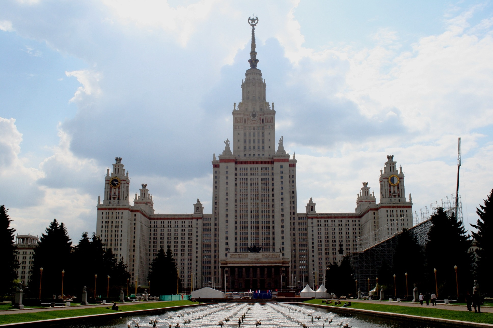

Сталинский ампир
- Сталинский ампир (от французского empire – империя) — одно из основных направлений архитектуры СССР с середины 1940-х и вплоть до 1955-го года.
- В средствах массовой информации зачастую используется как неформальное обозначение многообразия архитектуры данного отрезка времени.
- Для стиля характерно использование архитектурных ордеров с чёткими пропорциями и обильным декором.
- Тогда архитектура была идеологическим инструментом, передающим "стремление в светлое будущее".
Основные примеры и признаки
Главные постройки данного стиля, по совместительству являющиеся его символом — знаменитые сталинские высотки(семь высотных зданий различного назначения, строившихся на территории Москвы с 1947-го по 1957 годы.).

| Характеристика |
Значение |
| Годы активного использования |
1945-1955 |
| Простой и яркий пример |
Здание МИД |
| Причины упразднения |
Постановление «Об устранении излишеств в проектировании и строительстве». |
Примеры из архитектуры Челябинска